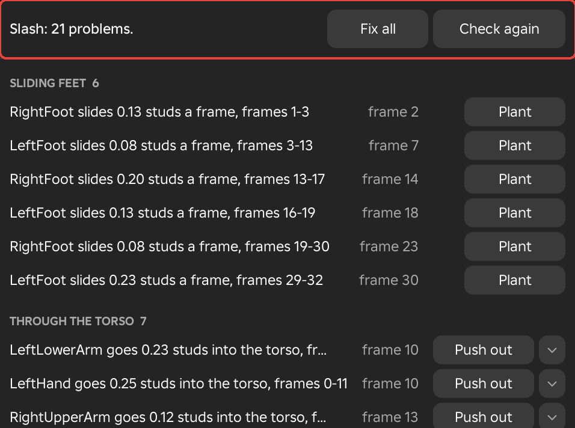

Check Animation
The Check Animation window lists what will look wrong in your game, each problem at its frame, and gives every problem a button that fixes it. It reads the animation as it will be saved and changes nothing until you press a fix.
Check Animation
- Menu
- Key ‣ Clean up ‣ Check animation
- View ‣ Windows ‣ Check animation
- Workspace
- Animate
Check animation reads every frame of the animation and lists what will look wrong in your game. Each problem is one row with a short description and its frame, grouped under a heading for its kind with a count. The row in the Key menu runs the check and opens the window. The row in the View menu does the same and closes the window again when you choose it while the window is open. The check reads the keys as they will be saved, so Preview mute and solo do not affect it, and it moves nothing on the rig.
The bar at the top of the window says how many problems were found, for example that the animation has 21 problems, or that nothing was found. Fix all and Check again are on its right. Click a row to move the playhead to its frame and select the limb it names, unless that limb is locked. A kind shows its first 40 rows and says how many more there are. When nothing is wrong, the window says that all checks passed, and adds the loop seam when Looping is on.
The status bar at the foot of the Framez window shows the number of problems, or that there are none, for the animation that was checked. Click it to check again and open the window. While the window is open, the list also checks again by itself a moment after the keys stop changing, so it stays correct as you fix things by hand.

Example
For example, run the check as the last pass before you save or publish an animation. Fix what the list shows, check again, and save when the list says all checks passed.
Problems
Each kind of problem has its own heading in the list. The rows of a kind describe what was found, and the fix named under each kind is the button its rows carry.
Sliding Feet
A foot on the floor that moves between frames. The check lists a foot whose sole is within 0.25 studs of the floor on two frames in a row and moves more than 0.03 studs sideways between them. Each run of frames is one row. It names the foot, the greatest distance the foot slides in a frame and the frames of the run, and the row's frame is where the slide is greatest. A row looks like "RightFoot slides 0.13 studs a frame, frames 1-3".
The fix is Plant. Fix Foot Sliding finds the same slides and plants them all at once.
Through the Torso
An arm or a leg that goes into the torso. The check lists a limb whose box is inside the torso's box by more than 0.1 studs. For an upper arm or an upper leg, which hangs from the torso, only the part from 40 % of its length outward is tested, because a shoulder or a hip always overlaps a little as the limb swings. Weapons and held objects are not tested. Each run of frames is one row, such as "LeftHand goes 0.25 studs into the torso, frames 0-11".
The fix is Push Out.
Pops
A limb end whose speed jumps in a single frame. The check measures the speed of the hands, the feet, the head, the weapon and the root, and lists a frame where the speed changes by more than a third of the limb's top speed. A limb that never moves faster than 0.5 studs a second is left out. Pops on frames within two frames of each other are one row, and a pop that several limbs share is one row naming all of them, such as "Speed jumps: RightHand, LeftHand". The Speed view in the Curve editor draws the same speeds.
The fix is Average.
Dead Stops
A limb end that stands completely still between two moves. The check lists a limb whose speed stays under 3 % of its top speed for three frames or more, with motion before and after. Limbs that stop on the same frames are one row, such as "RightHand stops dead, frames 20-24, between moves". A stop at the very start or end of the animation is not listed, because it has motion on only one side.
The fix is Ease.
Overshoot
A move whose curve goes past its own keys. The check lists a span between two keys, at least two frames long, whose curve was shaped in the Curve editor and passes both of its keys by more than 1° or 0.02 studs. Back and Elastic easing overshoot on purpose and are not listed. A row looks like "RightUpperArm overshoots by 12 degrees, frames 4-10".
The fix is Clamp.
Rotation Flips
A limb that flips half a turn in one frame. The check lists a limb that turns by more than 100° between two frames when a half turn about one of its own axes brings it back to within 30°. A row looks like "RightHand turns 172 degrees in one frame".
The fix is Unflip.
Loop Seam
A looping animation whose last frame does not match its first. The check runs only while Looping is on. It lists a limb whose pose on the last frame differs from its pose on frame 0 by more than 1° or 0.02 studs, with a row at the last frame such as "RightArm jumps 6 degrees at the loop seam".
The fix is Close. Make Cyclic closes the loop for every limb at once.
Frame 0
Limbs that have keys but none on frame 0. A single row names all of them, such as "LeftArm, RightArm have no key on frame 0". When no limb has a key on frame 0, the row says that frame 0 has no keys and on which frame the animation starts.
The fix is Key Frame 0.
Priority
An animation saved with the priority Core, the lowest, which the game's own walk and idle animations play over. The row reads "Priority is Core, the lowest: raise it". Clicking the row opens the animation settings, where the priority is set.
The fix is Set Action.
Faces
Face keys that cannot be shown. One row says that the animation has face keys but the head has no Decal of the name they need. Another says that a face image will not load and asks you to select another. Only the second kind has a fix, Select....
Fixes
A row that can be fixed has a button on its right, named for what it does. Pressing it fixes that row as one undo step, and then the list checks again. The arrow beside a button opens that fix's own values, and the button on its own uses the values from the last time.
A fix made with a row's button becomes an item named Check fix in the Modifiers window, with its own values, its limbs and its frames, so you can change it, fade it, turn it off or delete it later. Fixes change the base keys of the animation, so while a layer other than Base is active, make Base the active layer first, as Active Layer describes.
Fix All
- Workspace
- Animate
Fix all, in the bar at the top of the window, runs the fix of every row that needs no choice, one after another, as a single undo step. Afterwards the list checks again, and the message says how many problems were fixed, how many could not be fixed and how many are left. The button shows only while at least one row can be fixed this way. Rows that need a choice, the face rows with Select..., are left for you. Changes made by Fix all are plain keys and do not create Check fix items.
Example
For example, an animation recorded from a video may list dozens of sliding feet and pops. Fix all clears them in one step, and a single Ctrl+Z takes all of it back if you prefer to fix them one by one.
Plant
Plant fixes a Sliding feet row. It holds the foot where it was on the first frame of the stretch for every frame of the stretch, and the leg follows to keep it there. It is the Foot Lock tool applied to the frames of the row, and it has no values of its own beyond the foot and the frames.
Push Out
Push out fixes a Through the torso row. On each frame of the row it turns the limb at its shoulder or hip, the joint under the torso that carries it, only as far as the limb needs to leave the torso. The turn eases in and out over a few frames on each side, and the keys it writes are thinned afterwards. If the limb is not carried by a joint under a torso, or no turn of up to a quarter turn clears it, the message says that the limb cannot leave the torso by turning at that joint.
The arrow opens the options. The rig shows the result while you change the values, and the Push out button keeps it, while Cancel puts the keys back.
Options
- Clearance
- How far from the body the limb ends, in studs, from 0 to 1. The default is 0.05.
- Blend
- The number of frames the push eases in and out over, from 0 to 30. The default is 3.
Average
Average fixes a Pops row. It replaces the frames of the pop, and one frame either side of them, with keys averaged from the frames around them, on the limbs the row names and by default on the limbs they hang from as well. The message names the frames and the limbs it changed.
The arrow opens the options.
Options
- Frames around
- How many frames either side the averaged keys come from, from 1 to 10. The default is 2.
- Strength
- How much of the average is used, from 0 to 100 %. The default is 100 %.
- Also the limbs it hangs from
- Averages the limbs that carry the named limbs too, so the whole chain stays in step. It is on at first.
See Also
Peak Removal removes single-frame spikes from any frames you choose.
Ease
Ease fixes a Dead stops row. It slows the move into the stop and speeds the move out of it, so the limb comes to rest gradually and leaves gradually instead of stopping dead. It changes the easing of the key that ends the move into the stop and of the key that starts the move out, on the limbs the row names and the limbs they hang from. On an animation that has a key on every frame, it averages the frames at each edge of the stop instead.
The arrow opens the options.
Options
- Easing
- The curve of the slow-down, chosen from Sine, Quad and Cubic. Sine is the gentlest and the default.
Clamp
Clamp fixes an Overshoot row. It sets the two keys of the span to Smooth, a curve that eases in and out and never goes past its keys. It has no options.
Close
Close fixes a Loop seam row. It keys the last frame with the pose of frame 0 and spreads the difference over the frames before it, so the loop closes without a visible jump. It works on the limb of the row.
The arrow opens the options.
Options
- Spread over
- The number of frames before the end that the difference is spread over, from 1 to 600. The default is 10.
Unflip
Unflip fixes a Rotation flips row. It runs the Euler Filter on the limb of the row, which turns the flipped frames back and keeps the limbs it carries in place. It has no options of its own.
Key Frame 0
Key frame 0 fixes a Frame 0 row. It keys frame 0 on every limb the row names, with the pose each limb already shows there, so the animation starts exactly as it looks now. It has no options.
Set Action
Set Action fixes a Priority row. It sets the animation's priority to Action, which plays over the game's own walk and idle animations. The arrow opens the animation settings, where you can choose a different priority. Set Action is included in Fix all.
Select...
Select... is the button on a Faces row whose face image will not load. It opens the list of faces for that face key, so you can select another image. Clicking the row opens the same list. This fix needs a choice from you, so Fix all leaves it alone.
Check Again
- Workspace
- Animate
Check again, in the bar at the top of the window, reads the animation again and builds the list from scratch. Use it after you change the animation in a way the window did not notice. The list also checks again after every fix, and by itself a moment after the keys stop changing while the window is open. The count in the status bar does the same when you click it.